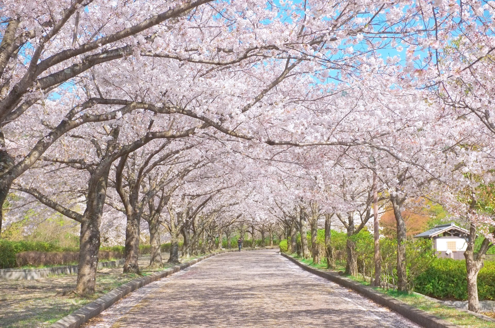
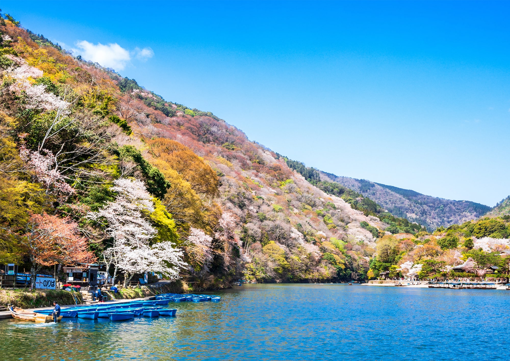

和らぎの道

亀岡市には、丹波を代表する桜の名所といわれる七谷川沿いの散策道「和らぎの道」があります。約1キロメートルにわたって28品種、約1,500本の桜並木は、3月下旬から次々と満開となり、濃淡のピンクのグラデーションを楽しむことができます。まさに桜のトンネルと呼ぶにふさわしい散策道は、写真愛好家も集う絶好のフォトスポットでもあり、市民の憩いの場所として親しまれています。
嵐山

嵐山とは一般に桂川にかかる渡月橋を中心にした地域をいい、四季を通じて花々が楽しめる。春には嵐山のいたるところがお花見スポットとなり、4月上旬は広沢池、大沢池堤のヤマザクラ、4月中旬は祇王寺のギオウジギジョザクラ、4月下旬は二尊院のフゲンゾウザクラが見頃を迎える。